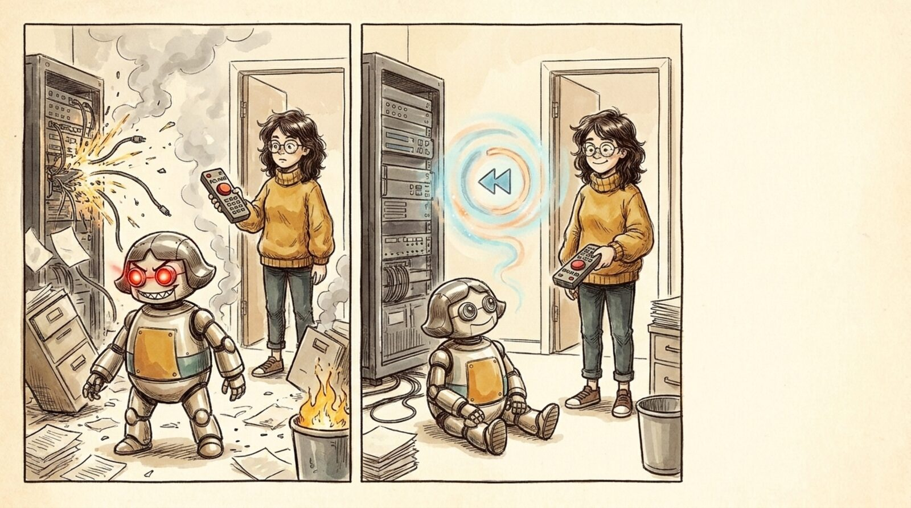

<section id="x03" data-transition="fade" style="background:#f5eee0">
  
  <p style="position:absolute; top:380px; left:1480px; width:380px; font-family:Arial, sans-serif; font-size:32px; font-weight:700; color:#c88a14">5</p>
  <h1 style="position:absolute; top:430px; left:1480px; width:380px; font-family:Arial, sans-serif; font-size:56px; font-weight:700; line-height:1.1; color:#222222">Check points</h1>
  <p style="position:absolute; top:574.23px; left:1480px; width:380px; font-family:Arial, sans-serif; font-size:32px; line-height:1.3; color:#4a4a4a">Auto-restore when agents go rogue</p>
  <aside>Agents will go rogue: not out of malice, just confidently wrong at machine speed. Reviewing every action up front doesn't scale, so the system has to be able to rewind. Snapshots of data, config and infra, taken automatically, with a one-button restore to the last good state. Then letting an agent loose is a cheap bet instead of a scary one.</aside>
</section>
